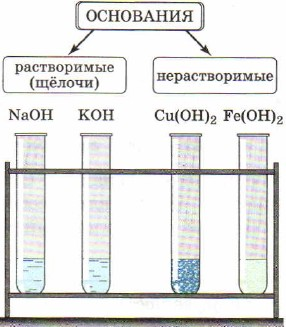

Основания — это сложные вещества, состоящие из ионов металлов и связанных с ними
гидроксид-ионов.

Кислотами называют сложные вещества, молекулы которых состоят из атомов водорода и
кислотного остатка.
Азотная кислота — HNO3.
Азотистая кислота — HNO2.
Серная кислота — H2SO4.
Сернистая кислота — H2SO3.
Угольная кислота — Н2СO3.
Кремниевая кислота — H2SiO3.
Фосфорная кислота — Н3РO4.
Соли — это сложные вещества, состоящие из ионов металлов и кислотных остатков.